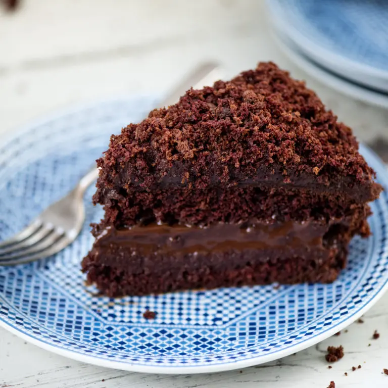

Chocolate Blackout Cake
Description
The best chocolate cake you will ever eat!
Ingredients
For the Cake
- ½ cup unsweetened Dutch-process cocoa powder
- 2 tablespoons boiling water
- 2 ounces unsweetened chocolate chopped
- ¾ cup milk
- 1 cup (2 sticks) unsalted butter, softened slightly
- 2 cups sugar
- 4 large eggs separated
- 2 teaspoons vanilla extract
- 2 cups all-purpose flour
- 1 teaspoon baking powder
- 1 teaspoon baking soda
- 1 teaspoon salt
For the Filling
- 1 tablespoon plus 1 3/4 teaspoons unsweeteend Dutch-process cocoa powder
- 2 cups boiling water
- ¾ cup plus ½ teaspoon sugar
- 1 ounce bittersweet chocolate chopped
- 2 tablespoons cornstarch dissolved in 1 tablespoon cold water
- ¼ teaspoon salt
- 1 teaspoon vanilla extract
- 2 tablespoons unsalted butter
For the Frosting
- 12 ounces semisweet chocolate chopped
- 12 tablespoons (1 ½ sticks) unsalted butter
- ½ cup hot water
- 1 tablespoon light corn syrup
- 1 tablespoon vanilla extract
Steps
- Preheat the oven to 375°F degrees. Butter and lightly flour two (8-inch) round cake pans.
- Make the cake: Place the cocoa in a small bowl and whisk in the boiling water to form a paste.
- Combine the chopped chocolate and milk in a saucepan over medium heat. Stir frequently until the chocolate melts, about three minutes. Remove from the heat. Whisk a small amount of the hot chocolate milk into the cocoa paste to warm it. Whisk the cocoa mixture into the milk mixture. Return the pan to medium heat and stir for one minute. Remove and set aside to cool until tepid.
- In the bowl of a mixer, cream the butter and sugar together. Beat in the egg yolks, one at a time, and the vanilla. Slowly stir in the chocolate mixture. Combine the flour, baking powder, baking soda and salt. Using a spatula or a wooden spoon, slowly add the flour mixture to the chocolate mixture. Fold in until just mixed.
- In another bowl, whisk the egg whites until soft peaks form. Using a spatula, gently fold the egg whites into the batter.
- Divide the batter between the prepared pans. Bake until a toothpick inserted in the center comes out clean, 35 to 45 minutes. Cool the cakes in the pans on rack for 15 minutes. Gently remove the cakes from the pans and continue to cool.
- While the cake is baking, make the filling: Combine the cocoa and boiling water in a small saucepan over low heat. Stir in the sugar and chocolate. Add the dissolved cornstarch paste and salt to the pan and bring to a boil, stirring constantly. Boil for one minute. Remove from heat and whisk in vanilla and butter. Transfer the mixture to a bowl, cover and refrigerate until cool and thick.
- Make the frosting: Melt the chocolate in a double boiler over hot, not simmering, water, stirring until smooth. Remove the top of the double boiler from the heat and whisk in the butter, one tablespoon at a time. Return the top to the heat, if necessary, to melt the butter.
- Whisk in the hot water all at once and whisk until smooth. Whisk in the corn syrup and vanilla. Cover and refrigerate for about 45 minutes until it reaches a spreadable consistency.
- Assemble the cake: use a sharp serrated knife to slice each cake layer horizontally in half to form four layers. Set one layer aside. Place one layer on a cake round or plate. Generously swath the layer with one-half of the filling. Add the second layer and repeat. Set the third layer on top. Quickly apply a thin layer of frosting to the top and sides of the cake. Refrigerate for 10 minutes.
- Meanwhile, crumble the remaining cake layer. Apply the remaining frosting to the cake. Sprinkle it liberally with the cake crumbs. Refrigerate for at least 1 hour before serving.